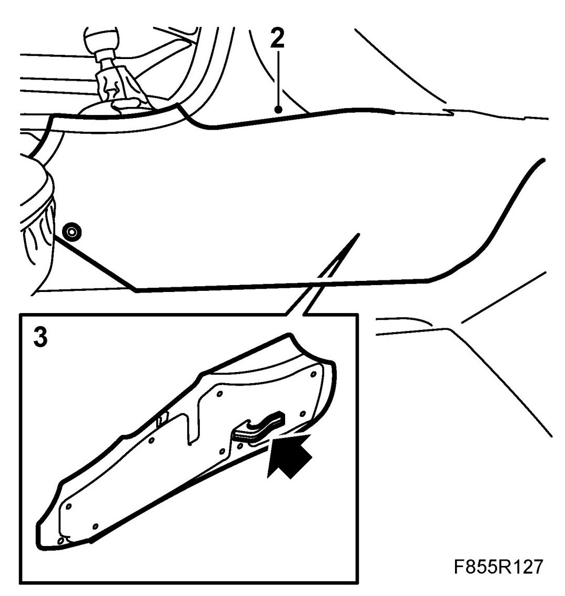
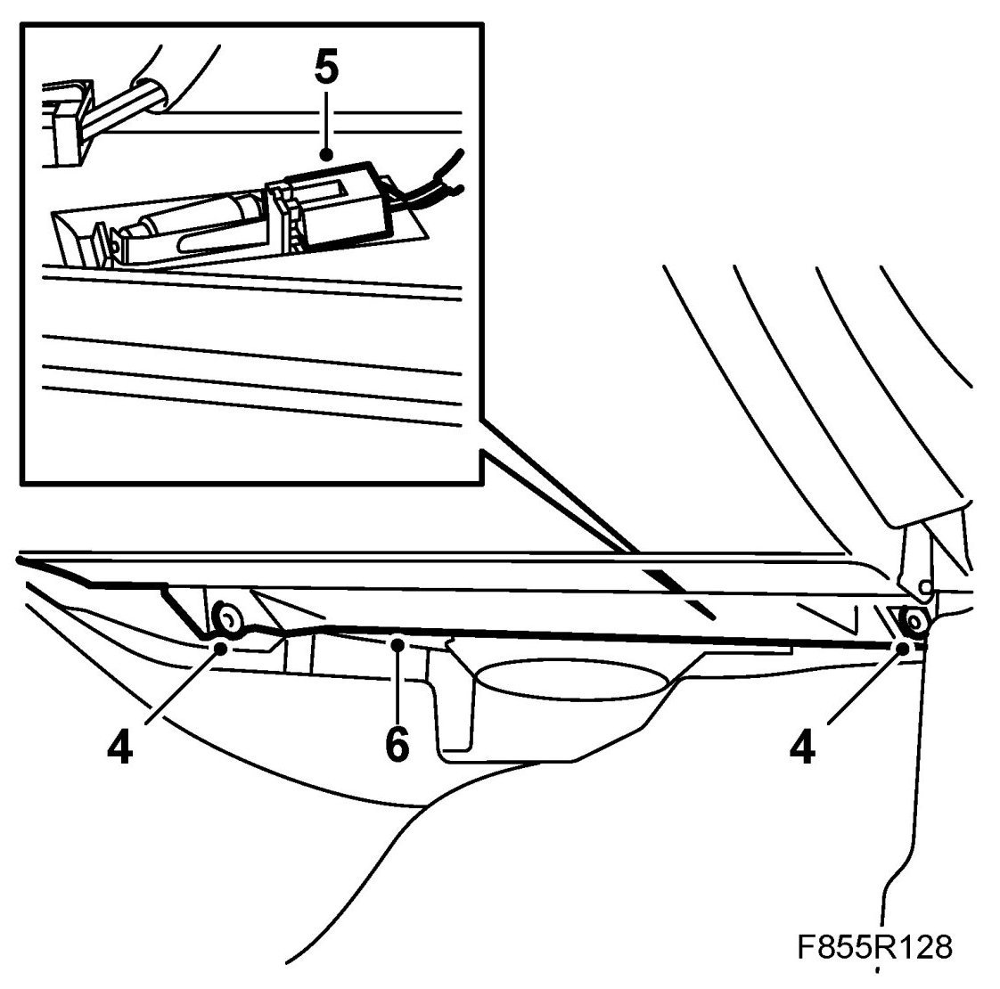
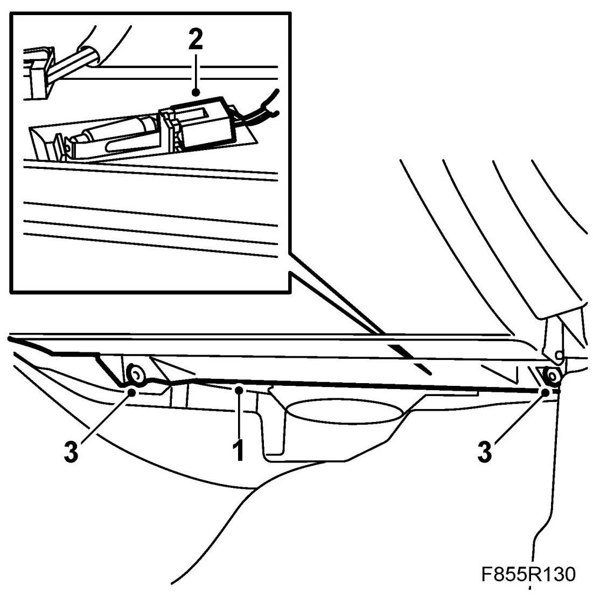
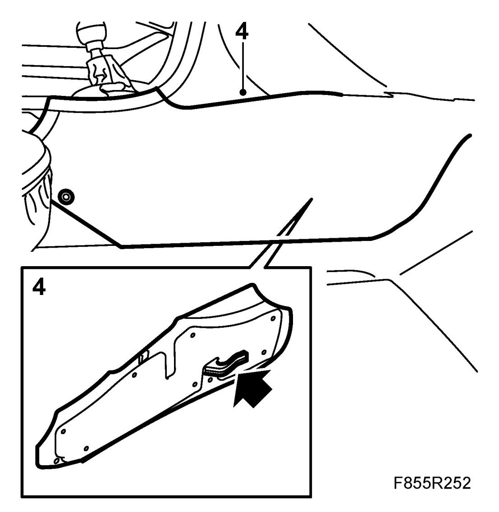

Sound Insulation Panel, Passenger
Sound Insulation Panel, Passenger
To remove
1. Move the seat to its rearmost position.
2. Remove the forward side panel from the floor console.

3. Remove the side panel by manoeuvring it backwards and downwards.
4. Remove the screws fixing the sound insulation panel to the fan housing and a further screw which is fitted from the side into the heating and ventilation unit.

5. Unplug the floor illumination connector.
6. Remove the panel downwards.
To fit
NOTE: Ensure that the locating flange on the panel is correctly positioned in the locating lugs on the heating and ventilation unit.
1. Locate the lower section of the panel.
2. Reconnect the floor illumination connector.

3. Refit the screws attaching the sound insulation panel to the fan housing and the heating and ventilation unit.
NOTE: Ensure that the side console mountings are located correctly in the floor console.
4. Fit the forward side panel of the floor console.
